Pultap: a redesign of a financial marketplace
Redesigning a digital financial marketplace, for desktop and mobile, and creating a UI kit for it.
- Role
- Freelance UX/UI designer
- Client
- Pultap, Azerbaijan
- Scope
- Redesign and a UI kit
- Period
- December 2025 to February 2026
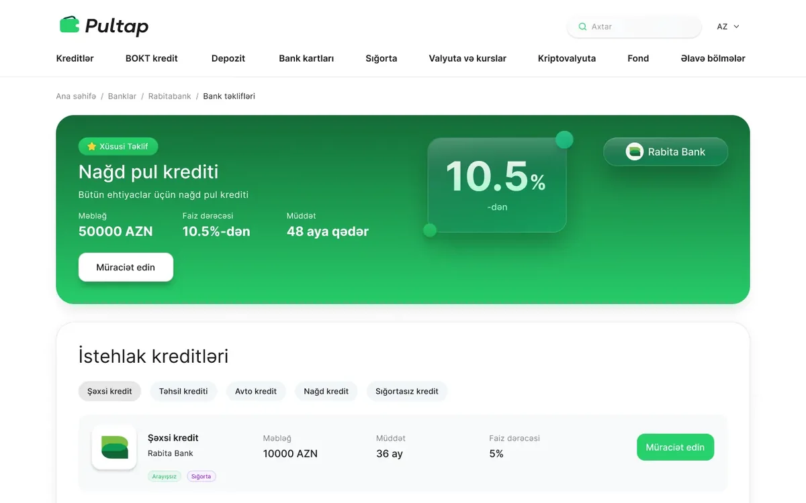
Overview
Pultap is a digital financial marketplace in Azerbaijan. It brings together the financial products of banks and non-bank credit organizations (BOKT in Azerbaijani) in one place, so that people can compare loans, cards and deposits.
I worked on the redesign as a freelance designer for about three months. I redesigned the platform, for desktop and mobile, and created a UI kit for it. The interface is in Azerbaijani.
Structure
The pages are built from the same blocks. Each starts with breadcrumbs and a header for the bank or organization, then content in white cards on a light background. Offers are rows or cards that show the amount, term and rate side by side, each with one green Apply button.
Below the main content the pages repeat the same sequence: other banks’ offers, customer reviews, news, frequently asked questions and a directory of services, ending with one call to action and the footer.
The pages
Each page below is the full design. Hover over a screen to scroll through it.
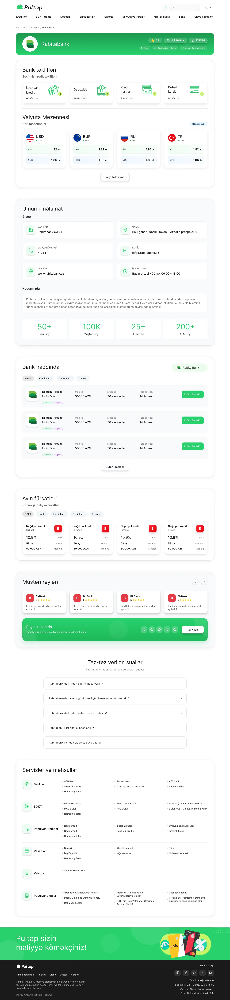
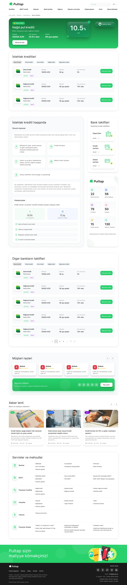
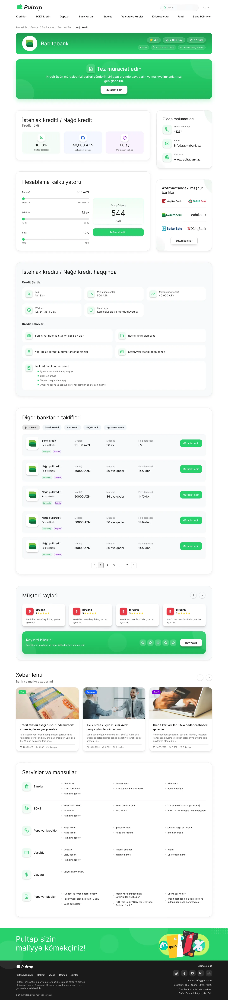
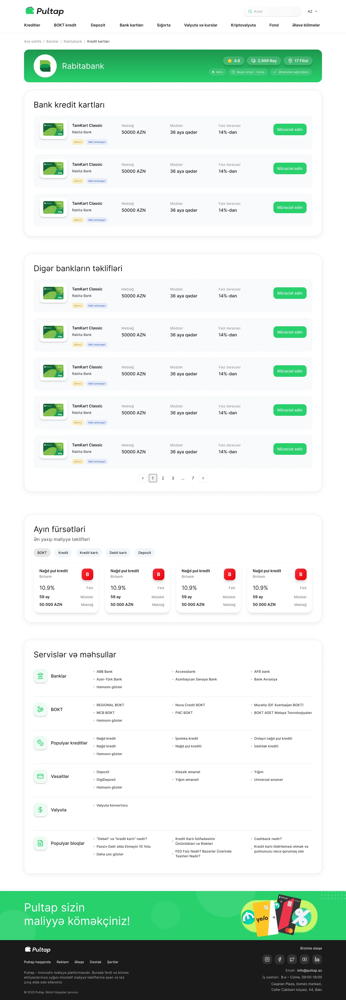
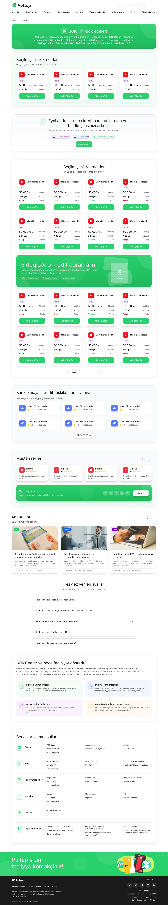
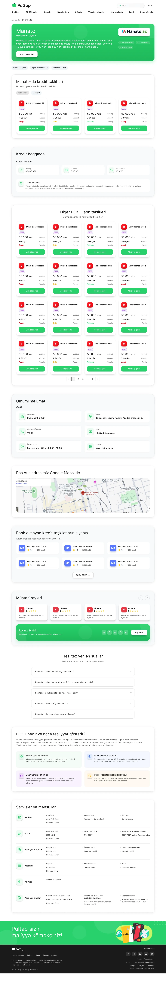
Mobile
The pages are also designed for a 390px wide phone screen. Content stacks into a single column, offers become cards, the navigation collapses into a menu, and the blocks follow the same order as on desktop. Hover over or scroll inside a phone to see the whole page.
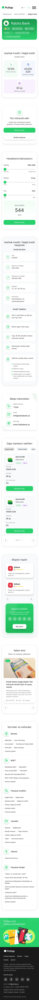
UI kit: foundations
I also created a UI kit with what the pages are made of. Its foundations are a type scale in Inter, with six headline levels, two subtitles, two body sizes and styles for buttons, captions and overlines, and colour scales in grey, purple, blue, yellow and orange, each in eleven steps, next to Pultap’s green.
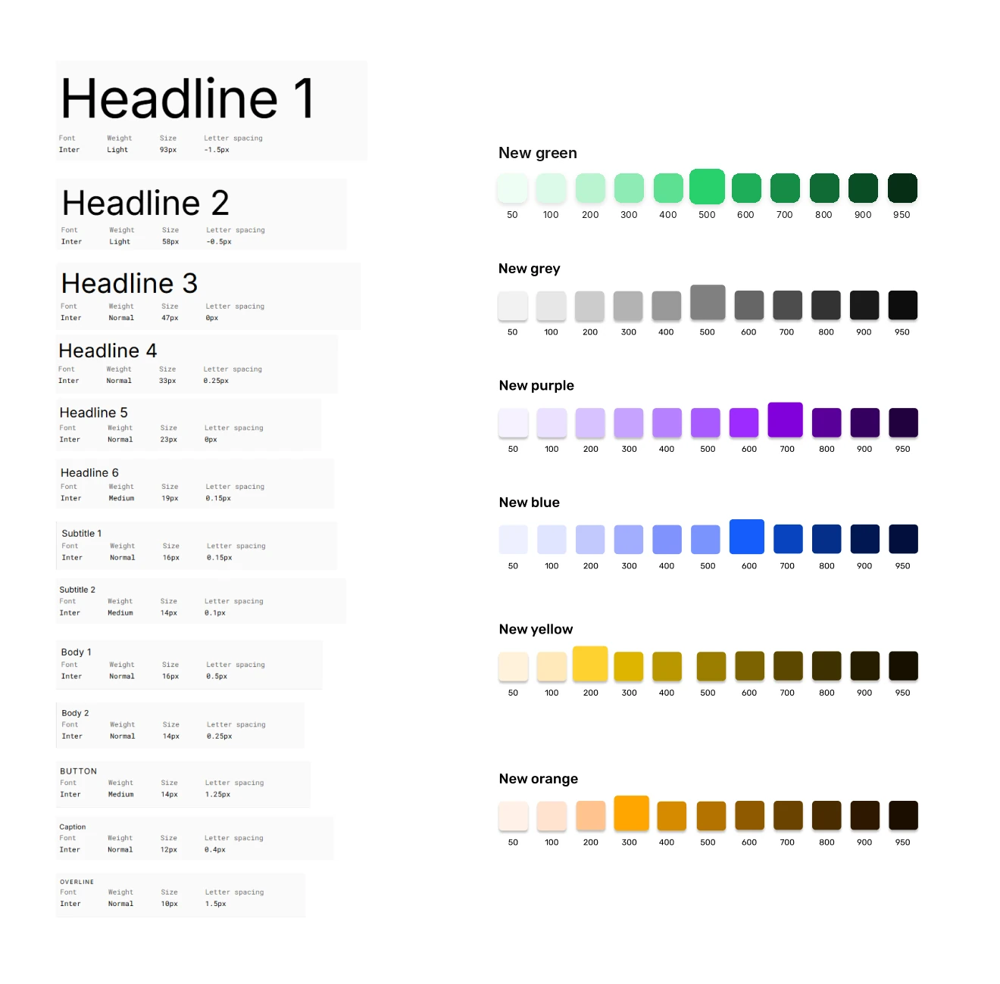
Elements and states
Buttons in default and hover states, tabs, tags, breadcrumbs, the main navigation, FAQ items closed, hovered and open, and star ratings from one to five.
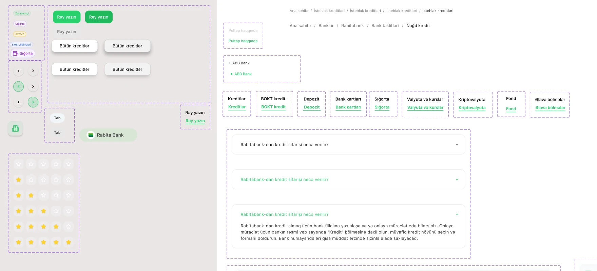
Components
Category cards, offer rows for loans, credit cards, debit cards and deposits, review and currency cards, news cards, microcredit cards, organization cards, pagination and the loan calculator. Icons come from lucide-react.
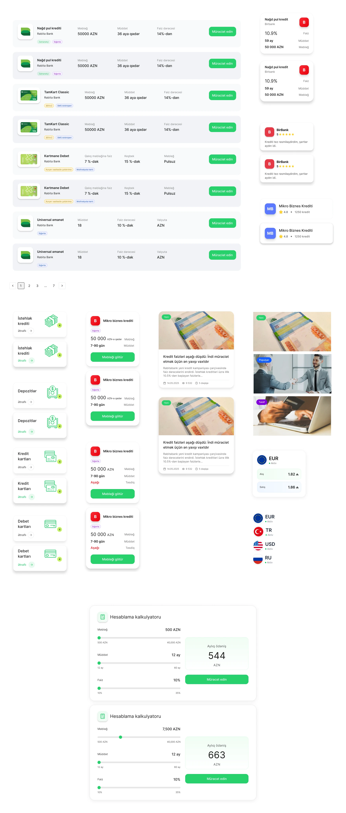